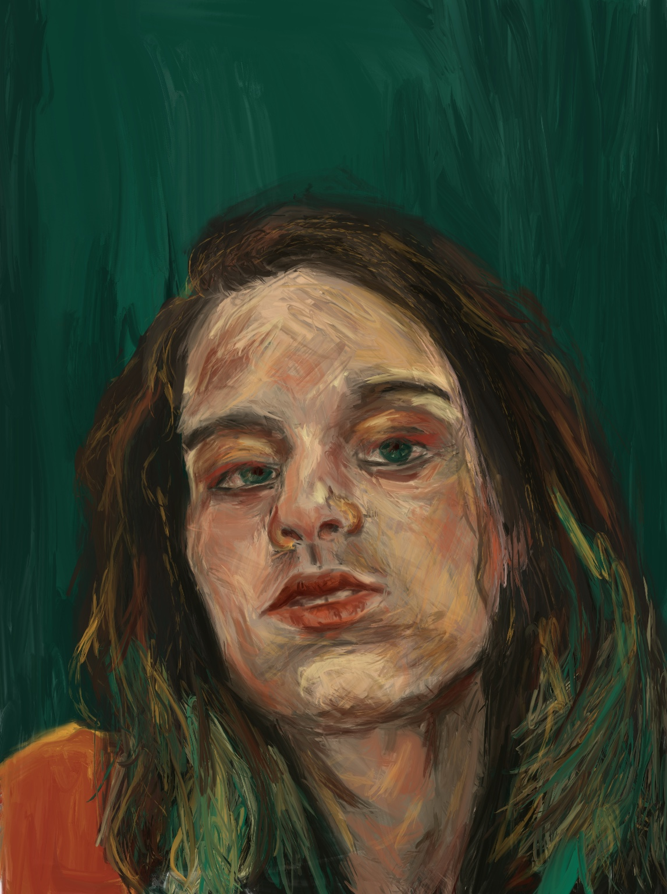
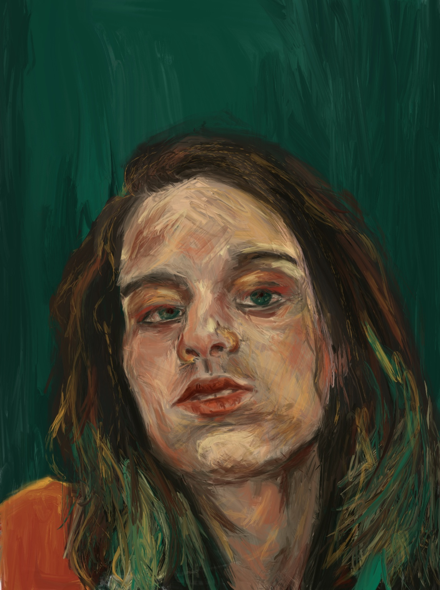

Greta Reed
I am a fine artist and graphic designer from Wilmington, Delaware. While I use a lot of traditional mediums such as graphite or pastel, I also am in love with typography and the digital process. I enjoy learning new things and complaining about being tired.